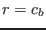

Next: The algebraic velocity variances Up: Fortran: Module Interface turbulence: Previous: Some algebraic length-scale relations Contents
INTERFACE:
subroutine epsbalgebraic(nlev)DESCRIPTION:
The algebraic equation for , the molecular rate of destruction of buoyancy variance, see (158), simply assumes a constant time scale ratio , see (66). From this assumption, it follows immediately that
USES:
use turbulence, only: tke,eps,kb,epsb use turbulence, only: ctt,epsb_min IMPLICIT NONEINPUT PARAMETERS:
number of vertical layers integer, intent(in) :: nlevREVISION HISTORY:
Original author(s): Lars Umlauf
$Log: epsbalgebraic.F90,v $
Revision 1.1 2005-06-27 10:54:33 kbk
new files needed